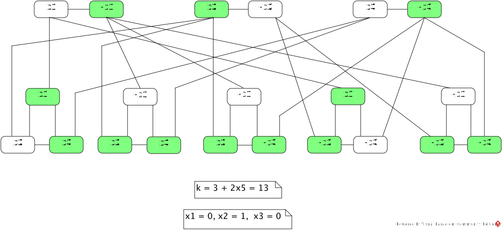
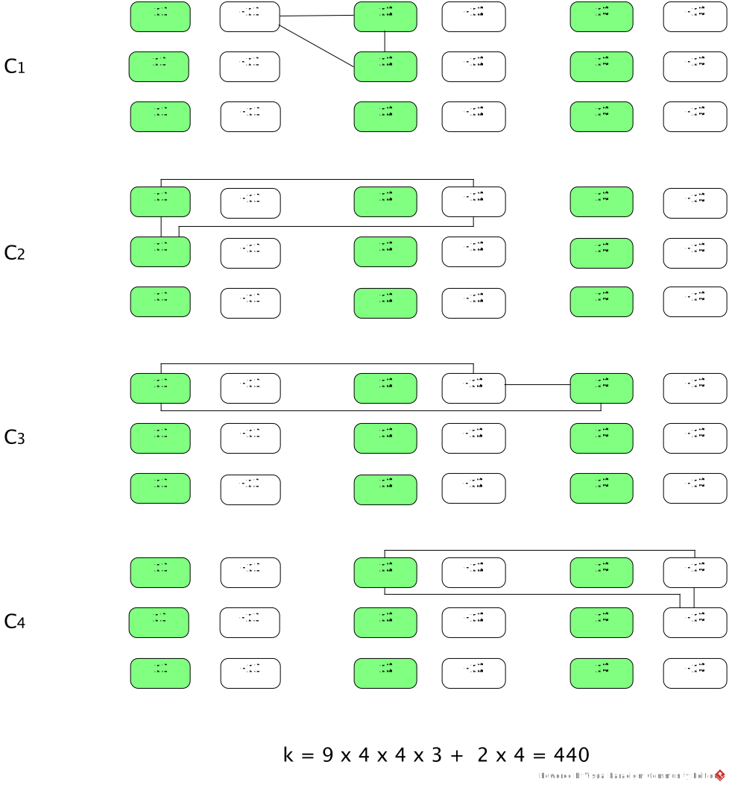

φ(x1, x2, x3) = (¬x1 ∨ x2 ∨ x2) ∧ (x1 ∨ x1 ∨ ¬x2) ∧ (x1 ∨ ¬x2 ∨ x3) ∧ (x2 ∨ ¬x3 ∨ ¬x3)Here, ¬xi is the negation of xi.
-
Give (Gφ, k) constructed from φ by the reduction.
(Gφ, k) is given in (b) and (c).
-
Give one satisfying assignment for φ, and a corresponding k-vertex cover for Gφ
produced by the equivalence proof.
The 11-vertex cover is shown in green.

-
Give one k-vertex cover for Gφ that is distinct from the one you gave in (b), and
give a corresponding assignment for φ produced by the equivalence proof.
The 11-vertex cover is shown in green.

-
Give the "sum table" constructed from φ by the reduction.
The sum table is given in (b) and (c).
-
Give one satisfying assignment for φ, and a corresponding subset
produced by the equivalence proof.
1 2 3 C1 C2 C3 C4 X1 1 0 0 0 1 1 0 ¬X1 1 0 0 1 0 0 0 X2 1 0 1 0 0 1 ¬X2 1 0 0 1 1 0 X3 1 0 0 1 0 ¬X3 1 0 0 0 1 g1 1 0 0 0 h1 1 0 0 0 g2 1 0 0 h2 1 0 0 g3 1 0 h3 1 0 g4 1 h4 1 t 1 1 1 3 3 3 3A = { x1 = 0, x2 = 0, x3 = 0 }, S' = { ¬X1, ¬X2, ¬X3, g1, h1, g2, h2, g3, h3, g4, h4 }.
-
Give one subset that sums to t and is distinct from the one you gave in (b), and
give a corresponding assignment for φ produced by the equivalence proof.
1 2 3 C1 C2 C3 C4 X1 1 0 0 0 1 1 0 ¬X1 1 0 0 1 0 0 0 X2 1 0 1 0 0 1 ¬X2 1 0 0 1 1 0 X3 1 0 0 1 0 ¬X3 1 0 0 0 1 g1 1 0 0 0 h1 1 0 0 0 g2 1 0 0 h2 1 0 0 g3 1 0 h3 1 0 g4 1 h4 1 t 1 1 1 3 3 3 3A = { x1 = 1, x2 = 1, x3 = 1 }, S' = { X1, X2, X3, g1, h1, g2, h2, g3, g4, h4 }.
- Give the Boolean formula, call it ≠φ, the reduction constructs from the formula φ in Question 1.
- Give one ≠-assignment for ≠φ, and a corresponding assignment for φ produced by the equivalence proof.
a. Let A be a ≠-assignment for φ. Then each clause of φ has a true literal L and a false literal L' under A. Literal L' is true under the negation of A, so each clause is true under the negation of A.
b. Since each clause is replaced with two clauses, the size of the formula doubles, so the reduction clearly runes in polynomial times. Suppose each clause ci is satisfied by an assignment A. Then one of y1, y2, y3 is true under A. If y1 = y2 = 0, assign zi = 1. If y1 = y2 = 1, assign zi = 0. If y1 = 0 and y2 = 1 or y1 = 1 and y2 = 0, assign zi = y3. In each case, the extended assignment is a ≠-assignment satisfying the two clauses replacing ci. Conversely suppose the generated formula has a satisfying ≠-assignment A. If b = 0 under A, it cannot be the case that y1 = y2 = y3 = 0 because this assignment makes one of the two clauses replacing ci false, hence at least one of y1, y2, y3 is assigned to 1. Thus ci is true under A limited to the variables of the original formula. If b = 1 under A, negate A to make b = 0. By a the negated A too is a ≠-assignment, and the same argument as above ensures at least one of y1, y2, y3 is assigned to 1.
c. It is clear ≠SAT ∈ NP. 3SAT is NP-Complete and 3SAT ≤p ≠SAT is proved in b. Hence ≠SAT is NP-Complete.
The following is ≠φ generated from φ in Question 1.
≠φ(x1, x2, x3, z1, z2, z3, z4, b) =One ≠-assignment is { x1=0, x2=0, x3=0, z1=0, z2=1, z3=0, z4=1, b=0 }. The corresponding assignment for φ is { x1=0, x2=0, x3=0 }.
(¬x1 ∨ x2 ∨ z1) ∧ (¬z1 ∨ x2 ∨ b) ∧
(x1 ∨ x1 ∨ z2) ∧ (¬z2 ∨ ¬x2 ∨ b) ∧
(x1 ∨ ¬x2 ∨ z3) ∧ (¬z3 ∨ x3 ∨ b) ∧
(x2 ∨ ¬x3 ∨ z4) ∧ (¬z4 ∨ ¬x3 ∨ b)
- Give the instance of MAX-CUT, (G, k), the reduction constructs from the formula φ in Question 1.
- Give one cut of size at least k of G, and a corresponding ≠-assignment for φ produced by the equivalence proof.
The reduction generates graph G as described and k = 9c2m + 2c, where c is the # of clauses and m is the # of variables of the given 3cnf-formula φ. The # of nodes of G is 6cm ≤ 6c·3c = 2(3c)2, which is in the asymptotic order of the square of the # of literals 3c in φ, so G can be constructed in polynomial time.
Note that if a clause has xi ∨ ¬xi, the variable gadget for xi has a pair of nodes labeled with xi and ¬xi connected by two edges, one given by the definition of variable gadgets, the other given by the definition of clause triangles. Inclusion of double edges in this case is necessary for the reduction to work correctly.
Proof of the equivalence condition. First, we note that G has 9c2m + 3c edges, 9c2m edges in the variable gadgets and 3c edges in the clause triangles.
Suppose φ has a ≠-assignment A that satisfies it. Define a cut by S = the set of true literals, T = the set of false literals. Then all the 9c2m edges in the variable gadgets are cut edges. Since A is a ≠-assignment, each clause has two literals with the same value and a literal with the opposite value under A. Hence each clause triangle has exactly two cut edges. Hence G has 9c2m + 2c cur edges.
Conversely suppose G has at least 9c2m + 2c cut edges. If an edge in any variable gadget is not included in the cut, the total number of edges in the cut is ≤ 9c2m−1 + 2c < 9c2m + 2c, since each clause triangle can contribute at most two cut edges. Thus all the 9c2m edges in the variable gadgets must be cut edges and 2c cut edges must come from each clause triangle contributing 2 cut edges. Therefore S includes all 3c xi-nodes or else ¬xi-nodes, and T includes all 3c ¬xi-nodes or else xi-nodes, respectively, for 1 ≤ i ≤ m. We can then consistently choose an assignment A s.t. all literals in S are true and all literals in T are false, or vice versa. Since each clause triangle has a cut edge, then, that clause has a true literal and a false literal under A, hence A is a ≠-assignment.
The following is (G, k) generated from the φ in Question 1. For brevity only 12 edges in the clause triangles are shown – 432 edges in the variable gadgets are not shown. A cut of size 440 is also shown where S is the set of white nodes and T is the set of green nodes. A corresponding ≠-assignment is { x1=0, x2=0, x3=0 } or { x1=1, x2=1, x3=1 }.

The four nodes are encoded by 2-bit numbers 00, 01, 10, 11. The following is an adjacency list of all adjacent nodes (a1a2, b1b2):
(00, 01) (00, 10) (01, 10) (10, 11) (11, 01)This adjacency list is encoded by the formula:
adjacent(a1, a2, b1, b2) = (a1=0 ∧ a2=0 ∧ b1=0 ∧ b2=1) ∨ (a1=0 ∧ a2=0 ∧ b1=1 ∧ b2=0) ∨ (a1=0 ∧ a2=1 ∧ b1=1 ∧ b2=0) ∨ (a1=1 ∧ a2=0 ∧ b1=1 ∧ b2=1) ∨ (a1=1 ∧ a2=1 ∧ b1=0 ∧ b2=1)ai = 0 is expressed by ¬ai and ai = 1 is expressed by ai. Nodes a1a2 and b1b2 are adjacent iff adjacent(a1, a2, b1, b2) is true.
The above example generalizes as follows. Let n be the # of nodes and e the # of edges of directed graph G. The nodes 0, …, n−1 are encoded by p = ⌈log2n⌉ bits. The adjacency list for n nodes is encoded by the formula adjacent(a1, …, ap, b1, …, bp) which is a disjunction of e conjunctions, each of which containing 2p literals. Each conjunction encodes an ordered pair of adjacent nodes in the manner illustrated in the above example.
By means of the encoding of adjacency lists described above, give a direct polynomial-time reduction from HAMPATH to SAT. Hint: For a directed graph with n nodes, a Hamiltonian path is a list of n distinct nodes (v0, …, vn−1) such that adjacent(vi, vi+1) holds for 0 ≤ i ≤ n−2. You must prove the equivalence condition and that your reduction runs in polynomial time.
Let the formula HAMPATH(v0, …, vn−1), where n is the # of nodes in the graph and v0, …, vn−1 are node variables, be defined as follows:
HAMPATH(v0, ..., vn−1) ≡ s = v0 ∧ t = vn−1 ∧ adjacent(v0, v1) ∧ adjacent(v1, v2) ∧ ··· ∧ adjacent(vn−2, vn−1) ∧ ∧0≤i<j≤n−1(vi ≠ vj) // v0, ..., vn−1 are mutually distinctThen there is a Hamiltonian path from s to t iff there exist nodes a0, …, an−1 satisfying HAMPATH(v0, …, vn−1), i.e., HAMPATH(a0, …, an−1) is true. The rest is a matter of translating node variables into Boolean variables.
Each node variable vi, 0 ≤ i ≤ n−1, is translated into p Boolean variables xi1, …, xip where p = ⌈log2n⌉. Each adjacent(vi, vi+1) formula, 0 ≤ i ≤ n−2, is translated into adjacent(xi1, …, xip, xi+11, …, xi+1p) as described in the above generalization. Inequality vi ≠ vj is translated into
xi1 ≠ xj1 ∨ ··· ∨ xip ≠ xjp. Every 1-bit inequality x ≠ y is translated into (¬x ∧ y) ∨ (x ∧ ¬y). The two equalities s = v0 and t = vn−1, where s and t are p-bit constants, are translated similarly. Let φHAMPATH(x01, …, x0p, …, xn−11, …, xn−1p) be the Boolean formula obtained by the translation.
The validity of the equivalence condition is rather straightforward:
There is a Hamiltonian path (a0, …, an−1) from s to t. ⇔Each adjacent formula in φHAMPATH has e·2p literals, so the n−2 adjacent formulas has e·2p·(n−2) literals. The translation of each inequality vi ≠ vj has 4p literals, so the total number of literals in the translation of all inequalities is 4p·n(n−1)/2. Hence the total # of literals in φHAMPATH, except for those in the translations of s = v0, t = vn−1 which can be omitted in asymptotic analysis, is e·2p·(n−2) + 4p·n(n−1)/2 = e·2⌈log2n⌉·(n−2) + 4⌈log2n⌉·n(n−1)/2, which is bounded by a polynomial of n and e. Thus the runtime of the reduction is polynomial.
s = a0, t = an−1, a0, …, an−1 are distinct nodes, and adjacent(ai, ai+1) holds for 0 ≤ i ≤ n−2. ⇔
HAMPATH(a0, …, an−1) is true. ⇔
φHAMPATH(x01, …, x0p, …, xn−11, …, xn−1p) is satisfied by the Boolean assignment that assigns the bits encoding a0 to x01, …, x0p, …, the bits encoding an−1 to xn−11, …, xn−1p.
-
Show that the worst-case time complexity function WM(n) is computable by
describing an algorithm to compute it.
Let Σ be the set of the input symbols of M and define Dn = { w ∈ Σ* : |w| = n }. The following is an algorithm to compute WM(n).k = 0; for ( each w ∈ Dn ) // one by one generate all input strings of length n, e.g., in lexicographic order { run M on w and count the number, α, of transitions performed; if ( α > k ) k = α; } return k; -
Describe how to modify the proof of Cook-Levin Theorem to prove L ≤m SAT, that is,
L is mapping reducible to SAT;
use the computability of WM(n).
We only need to change the size of the tableau and the Boolean formulas encoding it. Let f(n) = max(n, WM(n))+3, which is computable. Note that WM(n) < n is possible. Then tableaus of size f(n) × f(n) can represent the transition sequences of M. So we simply modify the sizes of the variable set, φcell, φstart, φmove, φaccept by replacing nk with f(n).